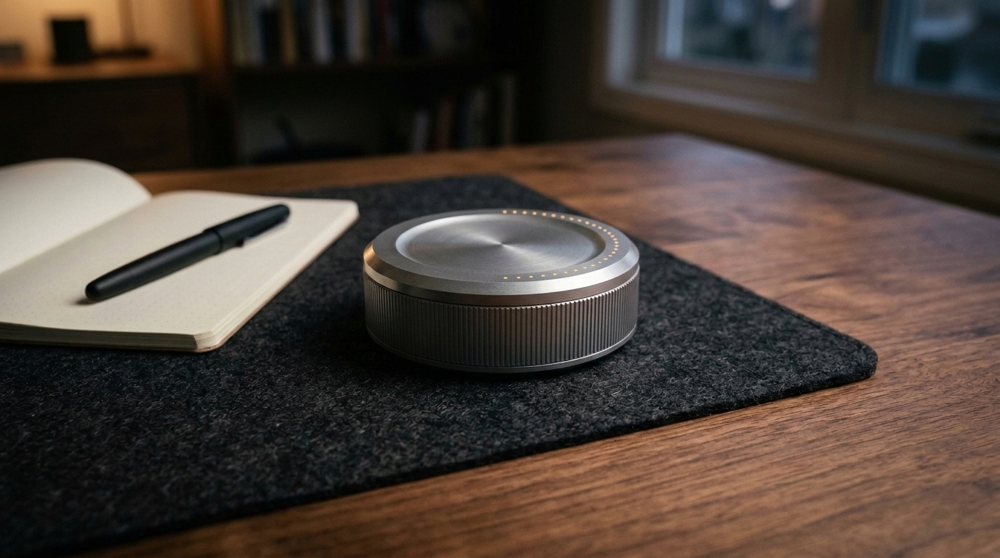
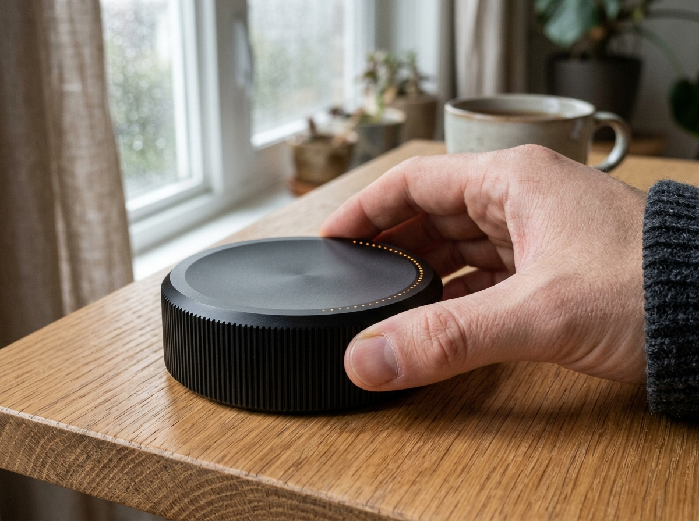

PILLAR 01 / SCREENLESS
秒数を突きつけない、
外周24灯の光の弧。
KOKU-01に液晶や有機EL画面はありません。外周ベゼルに精密配置された24灯のマイクロLEDが、暖かな光の弧として「残りの余白」だけを静かに示します。数字を読ませないから、思考の糸が途切れません。
スマートフォンの通知から離れ、ただ目の前の思考に沈み込むために。
回して時間を決め、天面を押して始まる、無画面デスクトップ集中タイマー＆環境音ダイヤル『KOKU-01』。

「25分だけ集中しよう」とスマートフォンを手に取った瞬間、目に入る未読バッジやニュースの見出し。 そして視界の隅で1秒ずつ減り続けるデジタル数字は、静かな思考に微かな焦燥感を与えます。 SOU DESIGN LAB は、画面も通信もすべて削ぎ落とし、指先の感触と穏やかな光だけで時間を扱う道具を設計しました。
KOKU-01に液晶や有機EL画面はありません。外周ベゼルに精密配置された24灯のマイクロLEDが、暖かな光の弧として「残りの余白」だけを静かに示します。数字を読ませないから、思考の糸が途切れません。
高級カメラレンズの絞りリングに着想を得た、非接触の36ステップ磁気ラチェット機構。小気味よいクリック感とともに外周を回し、天面を静かにひと押しするだけで、儀式のように集中が始まります。
スマートフォンアプリ連携は非対応です。スマホを別の部屋に置いたままでも、本体内蔵スピーカーから「雨音」や「ホワイトノイズ」を再生可能。デスクの上だけで深い没入環境が完結します。

マニュアルを開く必要はありません。初めて触れたその日から、身体の感覚とひとつになる直感的なインターフェースです。
外周リングをドラッグして回し、中央の天面を押してスタートしてください。24灯LEDの減衰と環境音、そして時間終了時の光の演出まで一連の流れをそのまま体験できます。
外周ドラッグで回転（36クリック機構）／ 中央天面クリックで開始・一時停止
毎日幾度となく指先で触れるものだからこそ、数値スペック以上に「回した瞬間の重み」と「デスクでの佇まい」を突き詰めました。
CNC旋盤によって無垢の金属ブロックから高精度に削り出された筐体は、手のひらに自然と収まる直径78mm・高さ26mm。210gの適度な質量と底面シリコンリングにより、デスクの上で片手の指先だけを添えても本体が滑らず、しっとりとしたトルクで回転します。
省電力設計のマイクロLEDと高効率オーディオ回路により、1回のUSB-Cフル充電で最大30日間の連続使用に対応。充電ケーブルに縛られず、書斎やデスクの好きな場所へ自由に置けます。
物理的なバネや爪ではなく、ネオジム磁石の反発・吸引を利用した36ステップ機構を採用。何万回まわしても購入初日の小気味よいクリック感が変わりません。
イヤホンで耳を塞ぐことなく、自分のデスク周囲だけを柔らかな音の繭で包む「無音・雨音・ホワイトノイズ」の3モードを内蔵スピーカーで再生します。
スマホOSのアップデートやアプリのサービス終了に左右されない完全スタンドアロン設計。時計や文鎮のように、長く愛用できる道具として1年保証を付帯しています。
| 製品名 | KOKU-01（無画面デスクトップ集中タイマー＆環境音ダイヤル） |
|---|---|
| メーカー / ブランド | SOU DESIGN LAB |
| 本体サイズ / 重量 | 直径78mm × 高さ26mm ／ 210g |
| 筐体素材 | CNC削り出しアルミニウム筐体（真鍮リミテッドは真鍮仕様） |
| ダイヤル機構 | 36ステップ磁気ラチェットクリック機構 ＋ 天面プッシュボタン |
| 時間表示 | 無画面・外周24灯LEDリング |
| 環境音モード | 内蔵スピーカー再生（無音・雨音・ホワイトノイズ） |
| 電源・バッテリー | USB-C充電（最大30日稼働） |
| スマートフォン連携 | 非対応（集中を妨げないスタンドアロン専用設計） |
| カラー展開 | アルマイトシルバー（基本価格）／ マットブラック（基本価格）／ 真鍮リミテッド（+¥3,000） |
| 先行予約価格 | 先行予約早割 ¥14,800（税込・20%OFF ／ 一般予定価格 ¥18,500） |
| 専用アクセサリー | 専用フェルトデスクマット（+¥2,400・税込） |
| お届け予定 / 保証 | 2027年3月順次発送 ／ メーカー保証1年 |
スマートフォンは通知やSNSなど集中を途切れさせる最大の要因になりやすいため、KOKU-01は「スマホを別室に置いたまま完結すること」を第一に設計されています。ペアリング設定やアプリの起動なしに、手を伸ばして1秒で集中を始められます。
外周に並ぶ24灯のLEDリングが時計回りに点灯して時間を示します（1周60分換算で1灯あたり2.5分、たとえば25分なら10灯）。細かい秒数のカウントを見せないことで、残り時間を過度に意識せず目の前の作業に没頭できます。
KOKU-01を置いた際の金属の設置音を吸収し、デスク上に「集中するための定位置」をつくる専用サイズのウール混フェルトマット（+¥2,400）です。下の購入シミュレーターで組み合わせをご確認いただけます。
2027年3月よりご予約順にて順次発送いたします。すべての個体にお届け日から1年間のメーカー製品保証が付帯します。
ご希望のプラン・本体カラー・オプションを選択すると、お支払い総額がリアルタイムに算出されます。一般販売に先駆けた先行予約早割（20%OFF）枠を受付中です。
1年間メーカー製品保証付帯 ／ 出荷前のキャンセル・お届け先変更可能
以下の構成にて先行予約枠を確保いたします（2027年3月順次発送予定）。
SOU DESIGN LAB『KOKU-01』をご予約いただきありがとうございます。
2027年3月の発送準備が整い次第、ご登録のメールアドレスへご案内いたします。